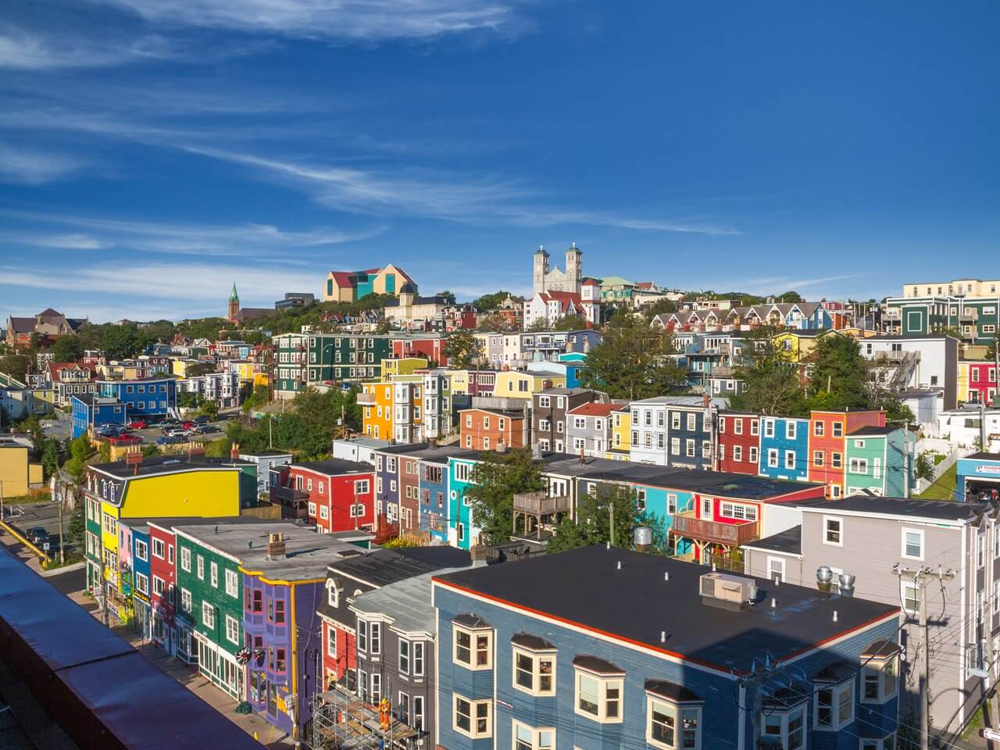

Welcome to
the Boreal Shield!
A naturally phenomenal destination.
Welcome to the second-largest ecozone in Canada - the Boreal Shield! Stretching from Saskatchewan to Newfoundland, this ecozone covers over 1.8 million
square kilometres of land (18% of Canada’s land mass), and contains distinctive biotic and abiotic features unique to this ecozone. With a great climate, luscious vegetation,
fantastic human activities, and diverse wildlife, we hope that you will come and enjoy your stay in the one and only Boreal Shield Ecozone!

The Boreal Shield in Canada.
Top Places To Go
The Boreal Shield is filled with different fascinating and exciting places to stay! Here are two destinations that you must visit:

St. John’s, Newfoundland
- Population: 205,955 (2016)
- Fun fact: Oldest city of Canada

Ottawa, Ontario
- Population: 1, 250, 000 (2018)
- Fun fact: Most educated city in Canada